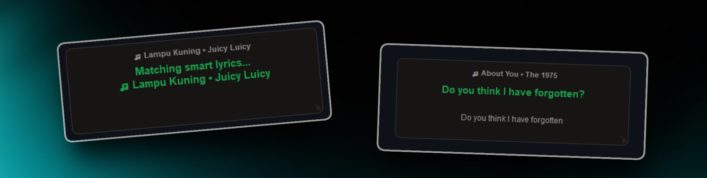
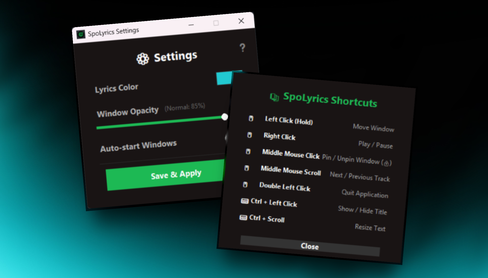

Zero-Delay Sync
100% precise time sync. Pulls real-time duration data straight from the Windows OS core.
SpoLyrics is a Spotify lyrics miniplayer that is minimalist, transparent, and 100% precisely synced using Windows System Media Transport Controls. Built with Python for a better listening experience while you work.

SpoLyrics was built to solve a simple complaint from friends: they wanted to listen to songs on Spotify or YouTube Music while working, but the official miniplayers didn't show any lyrics at all.
The app pulls duration data in real time directly from the Windows system core, so lyrics sync is 100% precise without relying on any third-party server. The result: lyrics flow along with the song, as smoothly as possible.
SpoLyrics masih dalam pengembangan aktif. Temukan bug atau punya ide? Jangan ragu buka issue di GitHub!
Curious how it feels? Play the interactive simulation below — no install needed.
This is a visual simulation of the desktop app. The real app syncs live with your own Spotify.
Designed lean, fast, and elegant — only what you need.
100% precise time sync. Pulls real-time duration data straight from the Windows OS core.
Automatically matches lyrics based on the duration of the playing song version — fixes the Radio Edit vs Album Version mismatch.
Elegant, transparent, and borderless design. Blends beautifully with your desktop wallpaper.
Left-click and hold anywhere to drag the lyrics window to your favorite spot.
Runs quietly in the background. Right-click the tray icon to open settings, hide lyrics, or view shortcuts.
Change lyric color (real-time HSV picker), adjust transparency, and enable "Auto-Start with Windows". Saved permanently.
Automatically checks for the newest version on PyPI and offers a seamless 1-click update experience.
Prevents accidental multi-skips with an 800ms debounce when scrolling through songs with your mouse wheel.
A super clean UI with no conventional buttons. Use these mouse gestures:
Right ClickPlay / PauseScroll Up/DownNext / Previous trackMiddle ClickToggle Pin / Lock jendelaCtrl + Left ClickToggle song titleCtrl + ScrollIncrease / decrease fontDrag ⇲ Bottom RightResize the windowDouble Left ClickClose the app3-Finger TapMiddle click (touchpad)
Quick answers about SpoLyrics.
SpoLyrics is a minimalist, transparent Spotify lyrics miniplayer for Windows with zero-delay sync, glassmorphism UI, and invisible keyboard controls.
Install via pip install spolyrics. Requires Python 3.8–3.12 on Windows 10/11. Do not use Python 3.13.
Yes. SpoLyrics is open source under the MIT license and free to use.
Yes. It uses native Windows APIs for precise duration matching with both Spotify and YouTube Music.
Yes. Source code is available on GitHub at github.com/paturrr/SpoLyrics.
One command. Requires Python 3.8 – 3.12 (do NOT use 3.13!)
Open Windows Terminal / Command Prompt and run:
pip install spolyricsIf you get a pip is not recognized error, use python -m pip install spolyrics.
Once installed, launch it from any directory:
spolyricsOr without a black terminal window: pythonw -m main. Make sure Spotify is playing a song!
winsdk for 0-delay performance without third-party servers, it cannot be installed on macOS or Linux.
pip install --upgrade spolyricspip uninstall spolyricsInstall SpoLyrics now and enjoy lyrics flowing perfectly with your music.